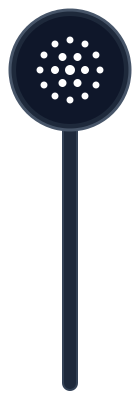
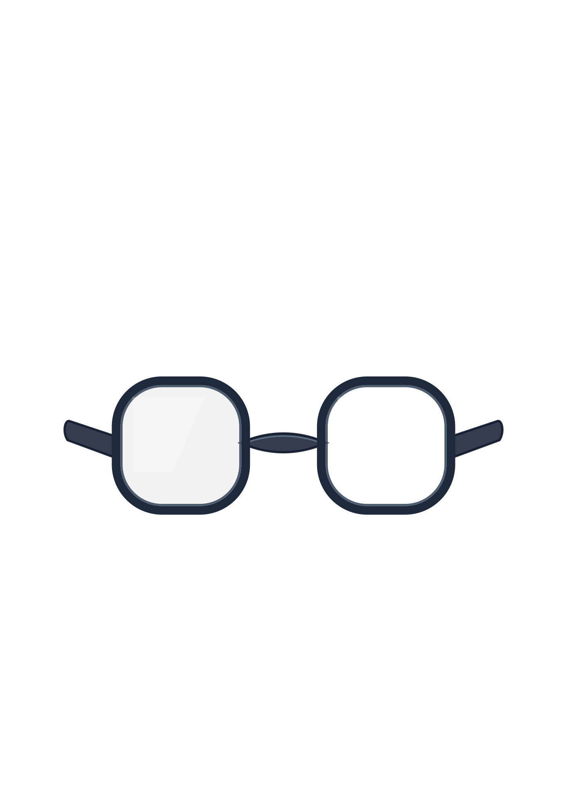

⬅ Voltar
📋 Ficha Clínica
Acuidade Visual
👁️
Oclusor
🖱️ Mover
Segue o cursor do mouse
📌 Clique na Tela
Trava na posição
🔓 Clique no Oclusor
Destrava para mover
🖱️ Botão Direito
Guardar na base


Olá! Estou pronto para o exame de acuidade visual.
🔭 Longe (6m)
📖 Perto (40cm)
👓 Correção (CC)
Tabela de Snellen (6m)
Clique na linha
E
20/200
F P
20/100
T O Z
20/70
L P E D
20/50
P E C F D
20/40
E D F C Z P
20/30
F E L O P Z D
20/25
D E F P O T E C
20/20
L E F O D P C T
20/15
J6
2 8 4
J5
7 3 5 9
J4
4 9 2 5 8
J3
8 5 2 9 6 3 7
J2
3 7 9 2 5 8 4 6
J1
3 7 9 2 5 8 4 6 1
Mensagem